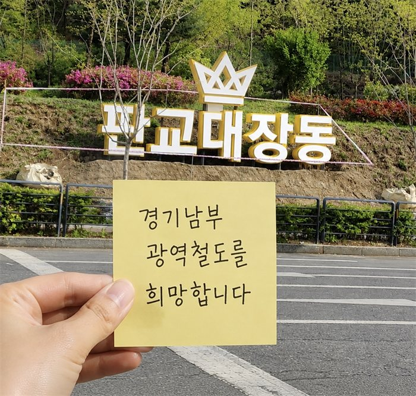
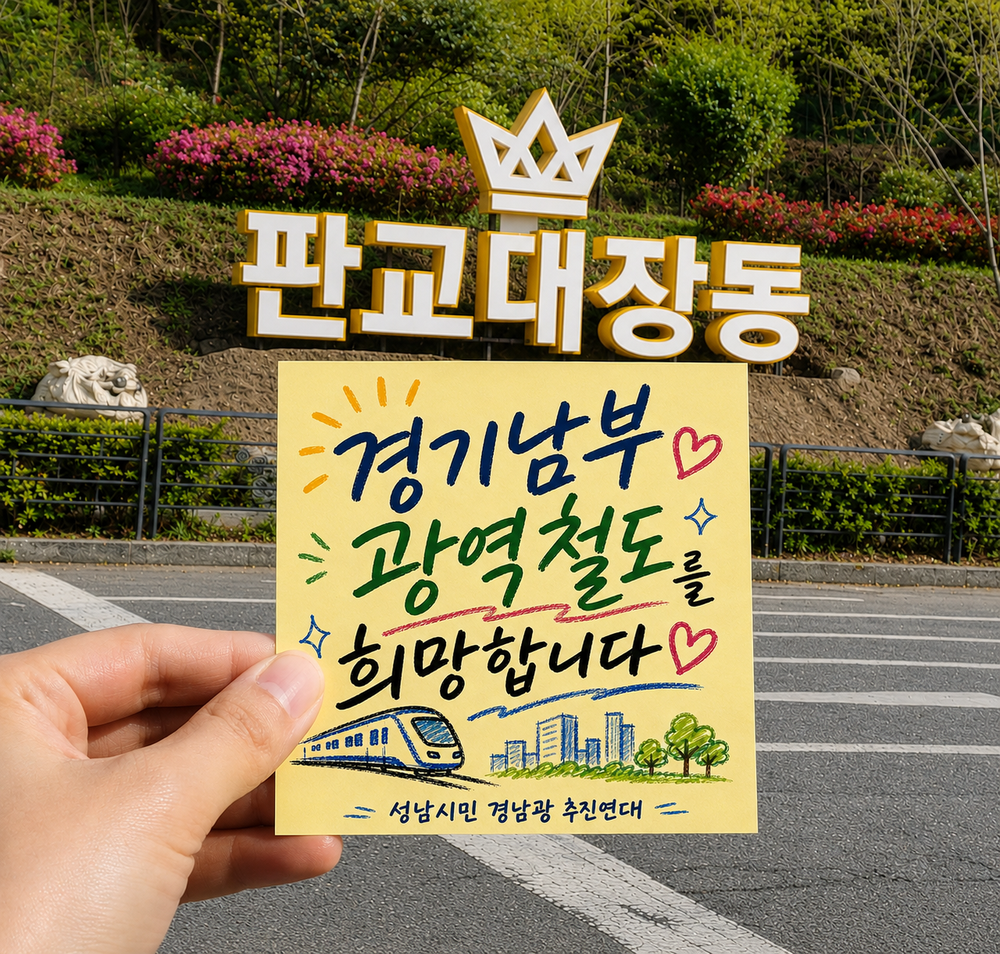

왜 지금인가
여러분의 관심과 노력이 노선을 살립니다
경기남부광역철도는 성남·용인·수원·화성을 하나로 잇는 경기 남부의 오랜 숙원입니다. 수백만 주민이 매일 극심한 정체 속에 출퇴근 고통을 겪습니다. 지금 제5차 국가철도망 구축계획 신규 사업 반영 여부가 결정됩니다.
- 교통교통 고립 해소 — 경기 남부 교통난을 풀 사실상 유일한 해법
- 상생초광역 상생 — 4개 도시를 잇는 협력 노선으로 함께 성장
- 시급골든타임 — 발표가 임박한 지금, 여론이 결과를 가릅니다
1
경기남부광역철도 시민 희망 릴레이
시민의 희망과 염원을 담은 인증 릴레이에 함께해 주세요
시민의 희망과 염원을 담은 인증 릴레이를 시작합니다.
보내주신 사진은 추진연대 공식 SNS(인스타그램·네이버 카페)에 공유될 수 있으며, 추후 동영상으로 제작하여 희망트럭 전광판에 송출될 예정입니다.


📸 인증 예시 — 이렇게 참여해 주세요
2
경기남부광역철도 제5차 국가철도망 반영 서명운동 참여
국회의원 용인시(병) 부승찬 의원, 경기남부광역철도 제5차 국가철도망 반영 10만 서명운동
✍️ 지금 서명하기
경기남부광역철도 제5차 국가철도망 구축계획 반영 10만 서명운동
서명 링크 바로가기 →
ℹ️ 신분당선 관련 설문에 대한 답변은 선택 사항입니다.
📖
부승찬 의원 블로그 보기blog.naver.com/booseungchan
→
국회의원 용인시(병) 부승찬 의원
경기남부광역철도 제5차 국가철도망 구축계획 반영, 및 신분당선 요금 인하를 촉구하는 “10만 서명운동”을 시작합니다!
경기남부광역철도 신설과 신분당선 요금 인하는 수지 주민들의 오랜 숙원입니다. 주민들의 교통불편을 해소하고, 수지를 경기 남부권 교통의 요지로 탈바꿈시킬 핵심 과제입니다.
제22대 국회 후반기 국토교통위원회에서 활동합니다!
김윤덕 국토교통부 장관과 철도국장, 박홍근 기획예산처 장관을 만나 경기남부광역철도의 제5차 국가철도망 구축계획 반영과 신분당선 요금 인하를 지속적으로 촉구해 왔습니다. 앞으로도 가능한 모든 방법을 찾아 끝까지 뛰겠습니다.
10만명 서명운동 목표 달성을 위해, 수지구민과 용인시민 나아가 경기도민 여러분의 뜨거운 관심과 지지가 필요합니다!
3
정치인에게 민원 문자
문구를 고르고 정치인을 선택한 뒤 버튼을 누르면 문자앱이 열립니다
💻 문자 자동작성은 휴대폰에서 동작합니다. PC에서는 버튼을 누르면 번호 + 문구가 복사되니 직접 보내주세요.
보낼 민원 문구 선택
전체 정치인에게 한 번에 보내기
4
민원 접수하기
각 부처 민원 페이지로 이동해, 바로 아래 문구를 복사해 제출하세요
💡 각 부처 버튼으로 이동한 뒤, 바로 아래 문구 복사 버튼으로 내용을 복사해 민원 내용란에 붙여넣어 제출하세요.